Understand the hardware
Map the M Device, Gateway, Configurator, barcode scanner and machine-side connections, including how measurement data travels through the system.
Designing a connected workspace that brings industrial devices, setup workflows and machine energy data into one clear operational experience.
Explore the system ↓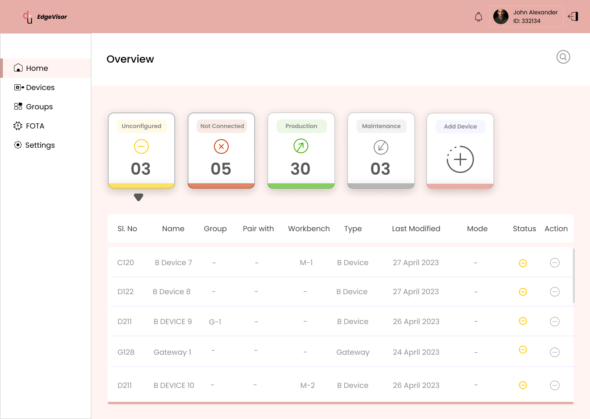
I began with the client and team requirements and worked with hardware and embedded teams to understand how the connected devices operate. I translated those system requirements into the tasks a factory operator needs to complete from the desktop application.
The research focus was the operational context: device relationships, setup dependencies, system states, measurement configuration and the actions needed to investigate or maintain a device.
Map the M Device, Gateway, Configurator, barcode scanner and machine-side connections, including how measurement data travels through the system.
Translate stakeholder and cross-functional requirements into the operator tasks: register, group, pair, configure, monitor and maintain.
Identify which steps rely on earlier setup—for example, an M Device needs the correct Gateway group before it can be configured for operation.
This case study documents system discovery, stakeholder requirements and workflow analysis. The source material does not record formal user interviews, participant counts or usability-test results, so I have not presented those as completed research.
A practical synthesis of the factory operator / administrator role and the tasks defined for EdgeVisor.
Needs confidence that device relationships and measurement settings are correct.
Moves through a sequence of setup and operational tasks.
Needs a clear view of unconfigured, not connected, Production and Maintenance states.
Must be able to diagnose connectivity, inspect logs, test data and update firmware.
This empathy map is a role-based synthesis of the documented product requirements and workflows, not a record of direct participant quotes.
I focused on making technical dependencies visible, separating operational tasks and helping the operator understand what to do next.
I grouped the experience into Home, Devices, Groups, FOTA and Settings so each area has a clear responsibility.
DECISION: TASK-BASED INFORMATION ARCHITECTUREI used clear state categories and a device table to help operators identify what is unconfigured, disconnected, in Production or in Maintenance.
DECISION: STATE-BASED OVERVIEW AND FILTERSI made QR scanning the entry point for adding M Devices and Gateways, then used confirmation and an Add More path to support repeated registration.
DECISION: REDUCE MANUAL DEVICE IDENTIFICATIONI treated Gateway group creation and M Device pairing as dependent tasks, making the relationship explicit in the setup journey.
DECISION: SHOW DEVICE RELATIONSHIPS BEFORE CONFIGURATIONI kept routine monitoring distinct from diagnostics, logs, testing, configuration and firmware actions to support safer device management.
DECISION: CLEAR OPERATIONAL MODESI designed EdgeVisor as the device-provisioning layer and connected its Production state to the separate DPM Dashboard experience for power and energy analysis.
DECISION: DESIGN FOR THE FULL PRODUCT ECOSYSTEMIndustrial power monitoring depends on more than displaying readings. Before useful data can appear, operators need to register hardware, create relationships between devices, configure measurement settings and confirm that everything is ready.
EdgeVisor brings these connected tasks into a single desktop workspace—without losing sight of the physical system behind the interface.
Multiple components—M Devices, Gateways, a Configurator and a barcode scanner—must work together.
Registration, grouping, pairing and configuration must happen in the right order before measurement begins.
Operators need to understand device state, identify issues and move between setup and maintenance.
Configured devices produce machine power data that can be explored in the DPM Dashboard.
How might I make a multi-step industrial hardware setup understandable and manageable from one computer, while giving operators a clear view of device readiness and energy data?
My process moved from system discovery to workflow definition, information architecture, interface design and design review. I worked with client, hardware and embedded-team requirements to understand the device ecosystem, operational dependencies and the tasks the application needed to support.
Map the physical components, their connections and the role each device plays in capturing power data.
Define what operators need to do to register, organize, pair, configure, monitor and maintain devices.
Turn technical dependencies into an ordered product experience with clear states and next steps.
The primary user is a factory operator or administrator responsible for overseeing machine power monitoring, device setup and ongoing device health from a central workstation.
Responsible for preparing connected hardware, checking readiness and keeping devices operational.
Register hardware, associate devices and verify readiness.
Identify devices that are unconfigured, disconnected, in Production or in Maintenance.
Check connectivity, inspect logs, test captured data and update firmware.
Multiple machines and device relationships managed from one desktop.
I structured the experience around the complete device lifecycle, from first registration to ongoing maintenance.
Scan QR codes to register M Devices and Gateways.
Create a Gateway group and assign the correct Gateway.
Associate each M Device with its group and linked Gateway.
Configure Gateway measurement state and M Device parameters.
Move configured devices into Production and begin power tracking.
Review logs, test captured data, run diagnostics and update firmware.
Keep device dependencies visible, make the current state easy to recognize, and provide clear feedback when a scan, connection or configuration step needs attention.
I simplified the detailed navigation and workflow map into five main areas. Each area has a clear job, while the key device actions remain connected to the device lifecycle.
Overview · State summary · Search · Add Device
SEE WHAT NEEDS ATTENTIONAll · Unconfigured · Not Connected · Production · Maintenance
REGISTER & MANAGE DEVICESGroup list · Create group · Assign Gateway · View group
ORGANIZE DEVICE RELATIONSHIPSChoose device scope · Select update · Review result
MANAGE FIRMWAREOverview · File schedule · Log schedule · Connectivity · Backup · Meter settings
CONFIGURE THE APPLICATIONThe detailed source architecture is represented here as a shorter navigation map for easier scanning. The original task relationships are reflected in the workflow and device-management sections below.
The interface is designed to move operators from a broad view of system health into the exact device or workflow that needs attention.
Summary cards communicate device states, while the table provides a route into individual records. The dashboard also gives operators a direct starting point for adding hardware.
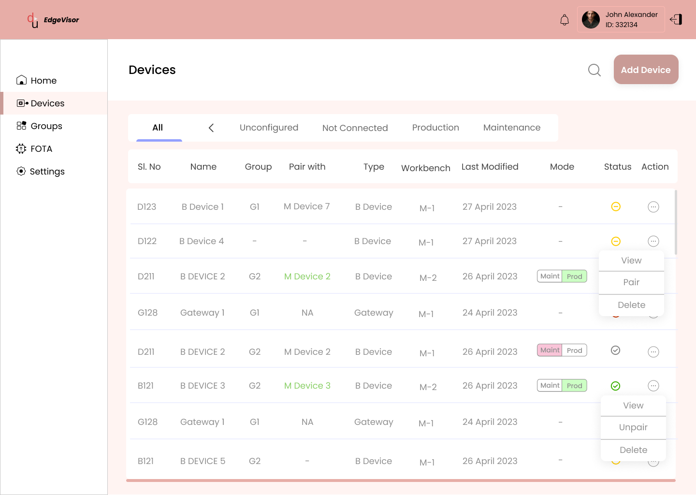
The device registry brings device identity, grouping, type, last-updated information, state and available actions into one working view.
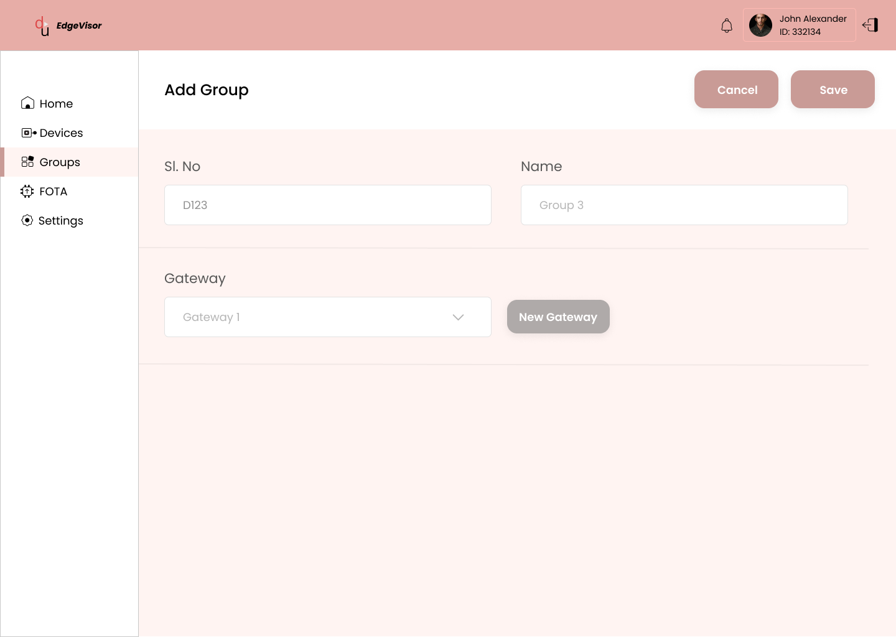
Gateway groups establish the relationship needed to pair M Devices correctly. The flow gives the operator a focused place to name a group, select a Gateway and save the relationship.
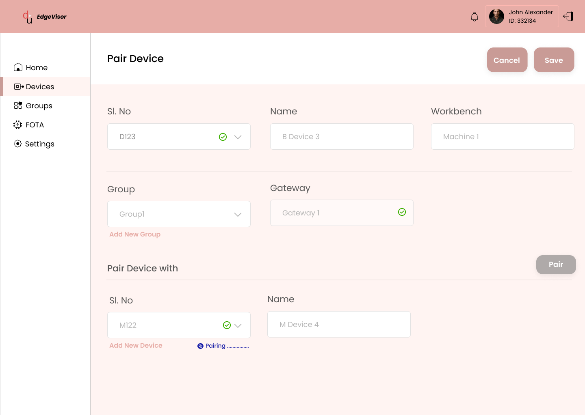
Pairing brings device identity, machine information and group assignment together so the operator can establish the correct relationship before configuration.
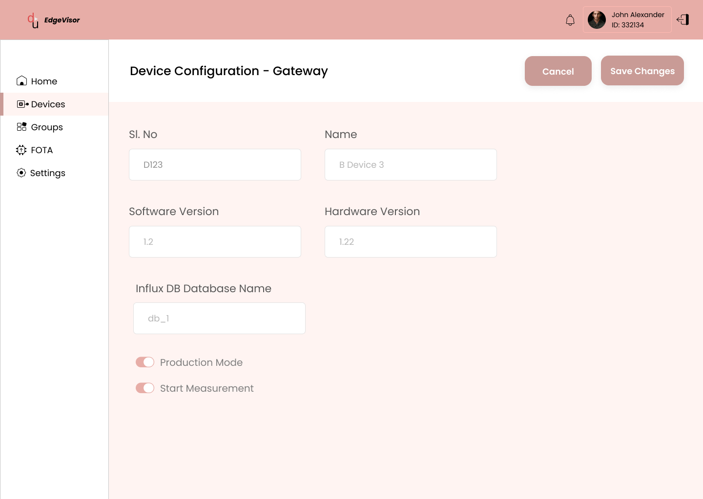
Gateway configuration exposes the settings needed to prepare measurement. M Device configuration provides the measurement interval, line frequency and sensor settings.
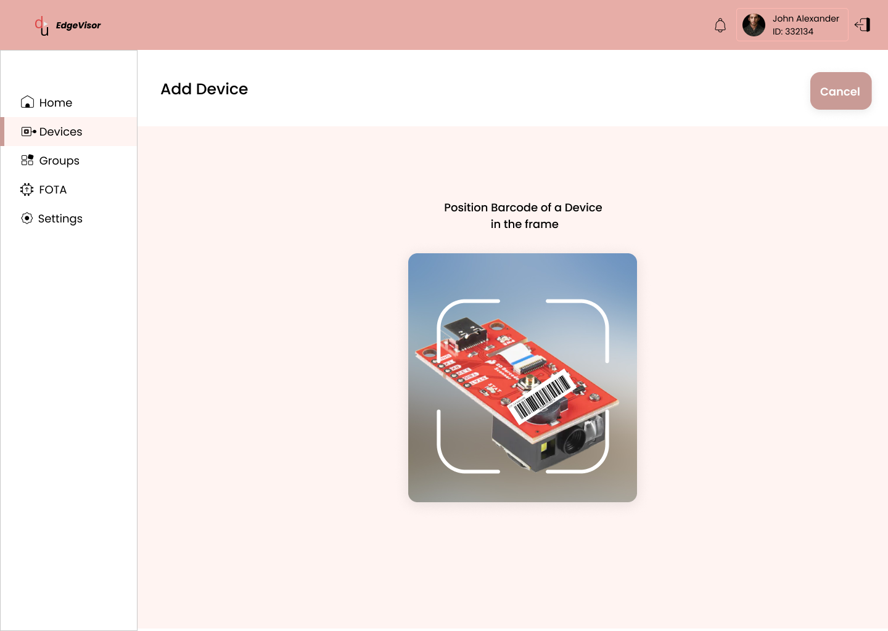
The scan-first flow uses the connected barcode scanner to register a new M Device or Gateway. A confirmation state helps the operator understand when the scan has been accepted and continue adding hardware.
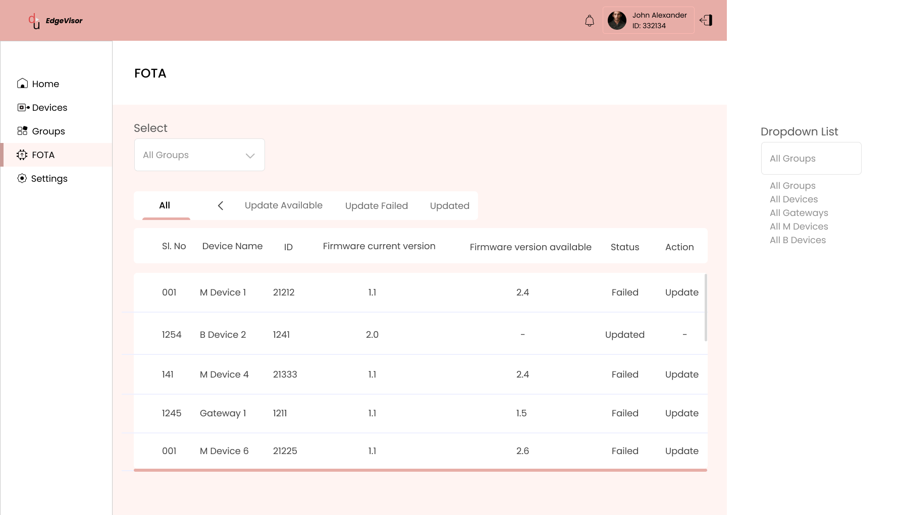
Firmware management has its own area in the navigation, keeping device lifecycle maintenance distinct from everyday monitoring and setup.
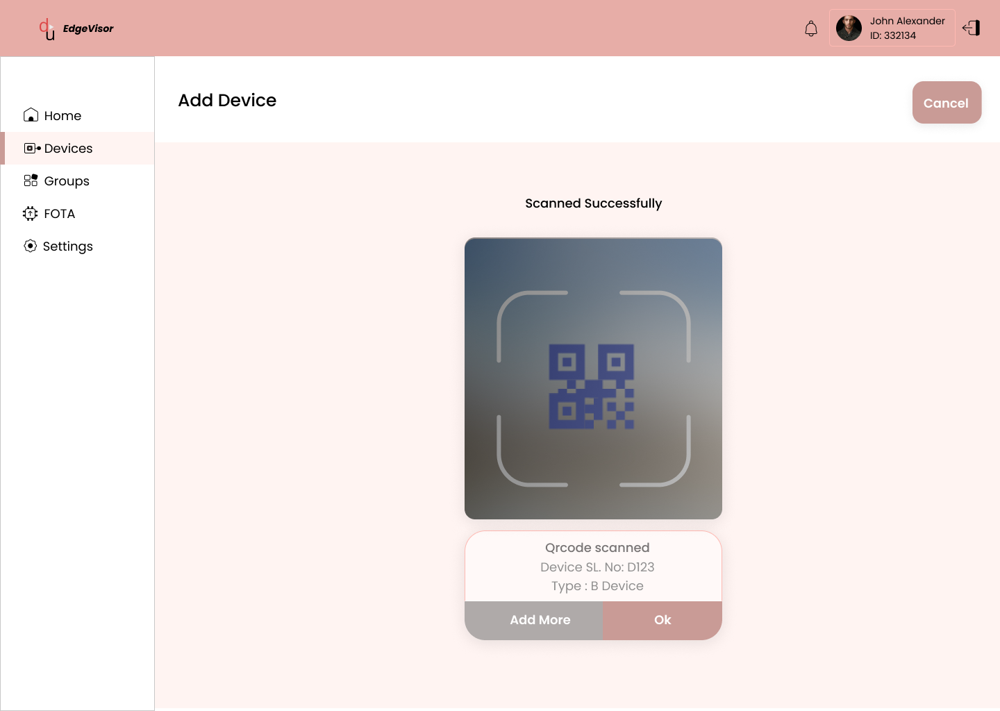
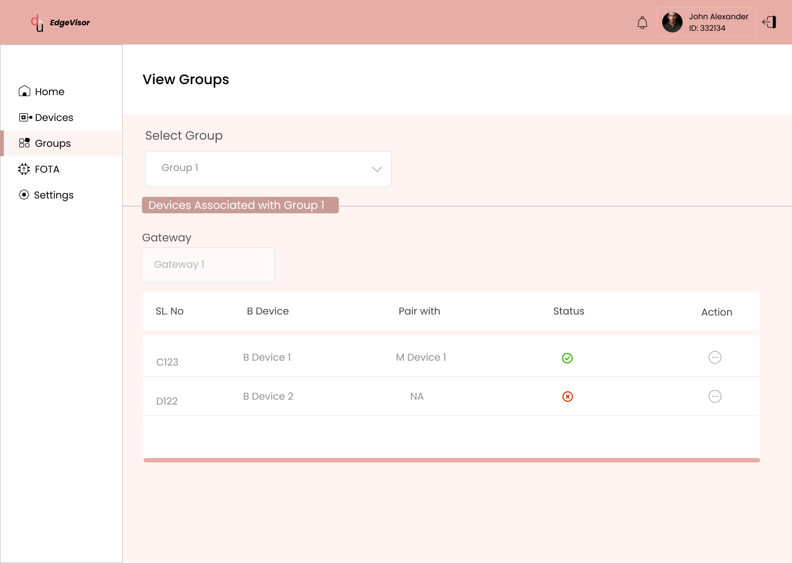
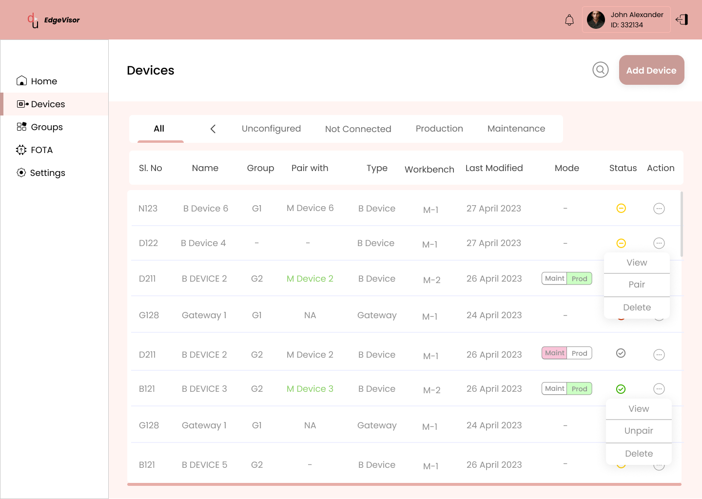
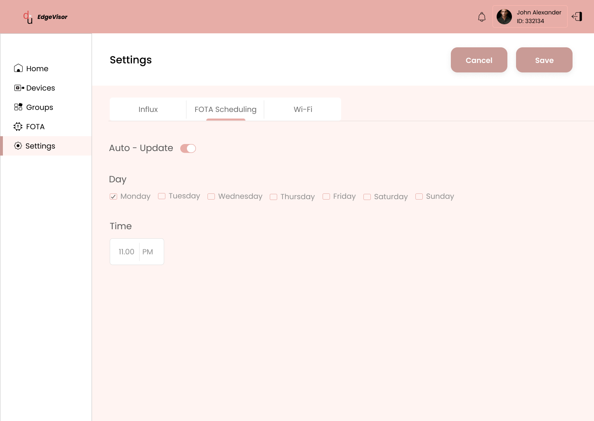
Once M Devices are configured and moved into Production, they capture machine power-consumption data and send it through the connected hardware path. The DPM Dashboard provides the separate experience for monitoring and analysis.
Provision, pair and configure devices.
M Devices capture machine power consumption.
Explore Active Power, Energy Consumption and Productivity.
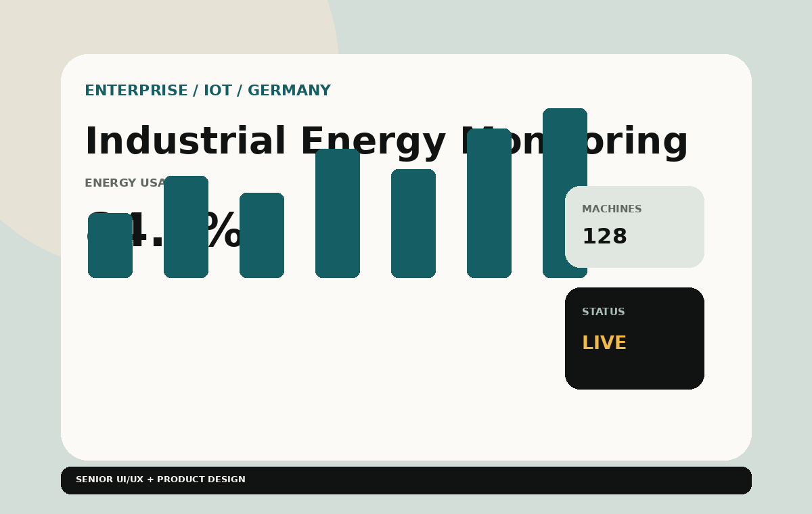
Current power usage with live chart, machine and table views.
Energy usage over a selected time period.
A separate metric view available from the dashboard tabs.
I reviewed the main workflows against clarity, consistency, system feedback and error prevention—especially where an incorrect action could affect device relationships or measurement readiness.
Registration, group creation, pairing and configuration are presented as a connected sequence, so operators can understand the dependency between tasks.
Scan confirmation, save actions and device-state labels help communicate whether an operation has completed and what state follows.
Device actions and settings are organized into repeatable patterns across the management areas.
Making the Gateway-to-group-to-M Device relationship explicit helps reduce pairing errors and incorrect assignments.
Production and Maintenance are treated as separate operating states, keeping diagnostic and firmware tasks distinct from live monitoring.
State summaries, filters and structured tables support quick scanning before an operator opens an individual device.
The design prioritizes visible device states, clear task dependencies and a consistent route from setup to ongoing maintenance. These are design-review principles and decisions, not claims of measured usability-test results.
EdgeVisor brings the connected-device lifecycle into a central desktop experience—from scanning and registering hardware to grouping, pairing, configuring and maintaining devices. The product connects the physical setup with the operational data that follows, giving factory teams a structured way to manage industrial energy monitoring. My design decisions focused on translating a technically complex device ecosystem into clear tasks, visible states and practical maintenance paths.
Designing around the relationship between hardware, software and data.
Making dependent setup steps easier to follow and manage.
Keeping device state, configuration and maintenance within reach.